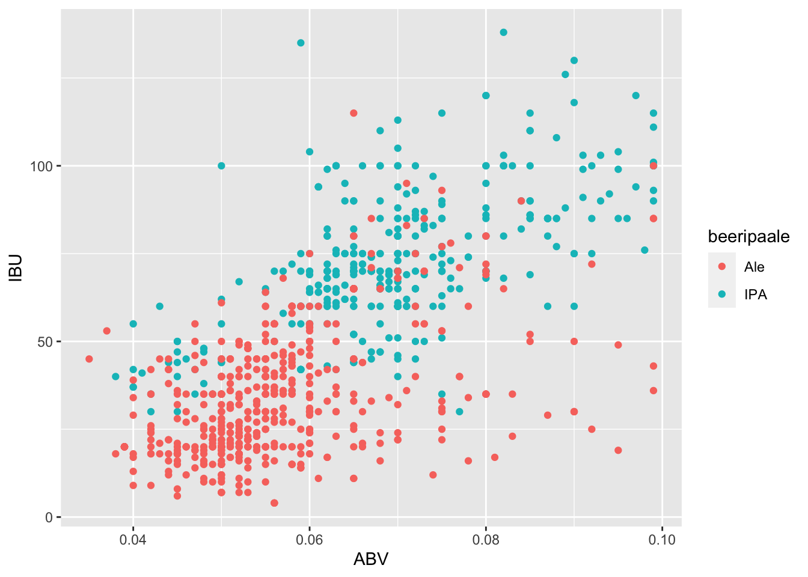
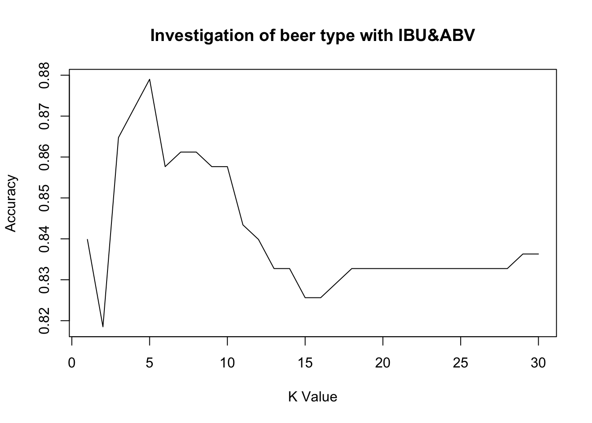
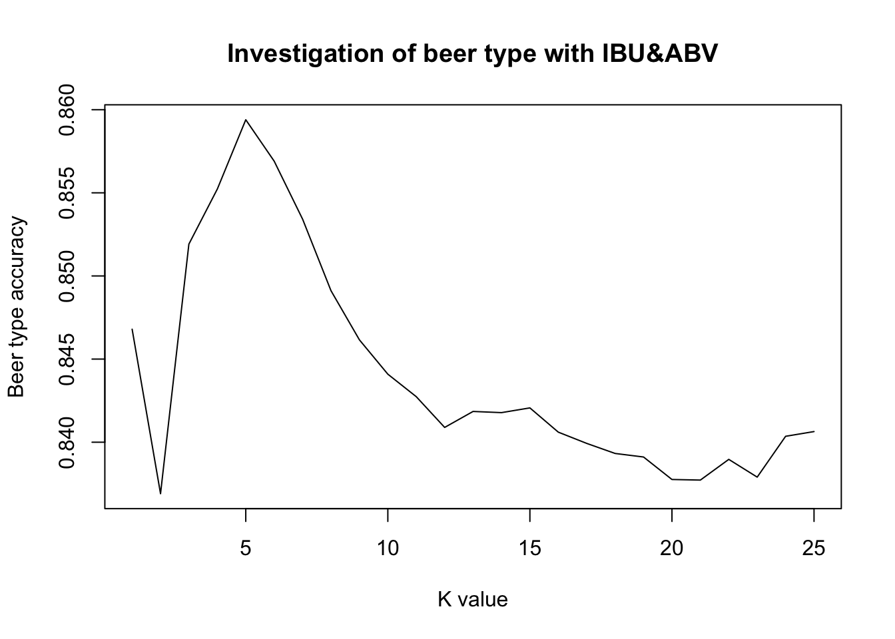

DDS Group beer analysis for Q8 and Q9
Sophia Wu
7/4/2020
Note that the echo = FALSE parameter was added to the code chunk to prevent printing of the R code that generated the plot. # Data Analysis for questions 8 and 9
beers2 <- beers
colnames(beers2)## [1] "Name" "Beer_ID" "ABV" "IBU" "Brewery_id" "Style"
## [7] "Ounces"names(beers2) <- c("beername", "beerID", "beerABV", "beerIBU", "beer.brewery.id", "beerstyle", "beerOunce")
head(beers2)## beername beerID beerABV beerIBU beer.brewery.id beerstyle
## 1 Pub Beer 1436 0.050 NA 409 American Pale Lager
## 2 Devil's Cup 2265 0.066 NA 178 American Pale Ale (APA)
## 3 Rise of the Phoenix 2264 0.071 NA 178 American IPA
## 4 Sinister 2263 0.090 NA 178 American Double / Imperial IPA
## 5 Sex and Candy 2262 0.075 NA 178 American IPA
## 6 Black Exodus 2261 0.077 NA 178 Oatmeal Stout
## beerOunce
## 1 12
## 2 12
## 3 12
## 4 12
## 5 12
## 6 12brew2 <- breweries
colnames(brew2)## [1] "Brew_ID" "Name" "City" "State"names(brew2) <- c("brewery.id", "brewery.name", "brewery.city", "brewery.state.abb")
brew2 <- brew2 %>%
mutate(brewery.state.abb = trimws(brewery.state.abb))
head(brew2)## brewery.id brewery.name brewery.city brewery.state.abb
## 1 1 NorthGate Brewing Minneapolis MN
## 2 2 Against the Grain Brewery Louisville KY
## 3 3 Jack's Abby Craft Lagers Framingham MA
## 4 4 Mike Hess Brewing Company San Diego CA
## 5 5 Fort Point Beer Company San Francisco CA
## 6 6 COAST Brewing Company Charleston SC#Insert State name and region
#makes a data frame with State abbreviation, name and region
stateinf= data.frame(state.abb, state.name, state.region, state.x77, stringsAsFactors=FALSE)
head(stateinf[1:5])## state.abb state.name state.region Population Income
## Alabama AL Alabama South 3615 3624
## Alaska AK Alaska West 365 6315
## Arizona AZ Arizona West 2212 4530
## Arkansas AR Arkansas South 2110 3378
## California CA California West 21198 5114
## Colorado CO Colorado West 2541 4884#Merge data brew2 with data stateinf and calculate breweries numbers are present in each state
brewstate<- merge(brew2, stateinf[1:5], by.x = "brewery.state.abb", by.y = "state.abb", all.x = TRUE)
head(brewstate)## brewery.state.abb brewery.id brewery.name brewery.city state.name
## 1 AK 494 Broken Tooth Brewing Company Anchorage Alaska
## 2 AK 224 Midnight Sun Brewing Company Anchorage Alaska
## 3 AK 459 Kenai River Brewing Company Soldotna Alaska
## 4 AK 454 Denali Brewing Company Talkeetna Alaska
## 5 AK 558 Sleeping Lady Brewing Company Anchorage Alaska
## 6 AK 271 Alaskan Brewing Company Juneau Alaska
## state.region Population Income
## 1 West 365 6315
## 2 West 365 6315
## 3 West 365 6315
## 4 West 365 6315
## 5 West 365 6315
## 6 West 365 6315beermerged <- merge(beers2, brewstate, by.x = "beer.brewery.id", by.y = "brewery.id")beermerged$beeripaale<- ''
head(beermerged)## beer.brewery.id beername beerID beerABV beerIBU beerstyle
## 1 1 Get Together 2692 0.045 50 American IPA
## 2 1 Maggie's Leap 2691 0.049 26 Milk / Sweet Stout
## 3 1 Wall's End 2690 0.048 19 English Brown Ale
## 4 1 Pumpion 2689 0.060 38 Pumpkin Ale
## 5 1 Stronghold 2688 0.060 25 American Porter
## 6 1 Parapet ESB 2687 0.056 47 Extra Special / Strong Bitter (ESB)
## beerOunce brewery.state.abb brewery.name brewery.city state.name state.region
## 1 16 MN NorthGate Brewing Minneapolis Minnesota North Central
## 2 16 MN NorthGate Brewing Minneapolis Minnesota North Central
## 3 16 MN NorthGate Brewing Minneapolis Minnesota North Central
## 4 16 MN NorthGate Brewing Minneapolis Minnesota North Central
## 5 16 MN NorthGate Brewing Minneapolis Minnesota North Central
## 6 16 MN NorthGate Brewing Minneapolis Minnesota North Central
## Population Income beeripaale
## 1 3921 4675
## 2 3921 4675
## 3 3921 4675
## 4 3921 4675
## 5 3921 4675
## 6 3921 4675#Get all different beers styles' numbers
beermerged %>%count(beerstyle)## beerstyle n
## 1 5
## 2 Abbey Single Ale 2
## 3 Altbier 13
## 4 American Adjunct Lager 18
## 5 American Amber / Red Ale 133
## 6 American Amber / Red Lager 29
## 7 American Barleywine 3
## 8 American Black Ale 36
## 9 American Blonde Ale 108
## 10 American Brown Ale 70
## 11 American Dark Wheat Ale 7
## 12 American Double / Imperial IPA 105
## 13 American Double / Imperial Pilsner 2
## 14 American Double / Imperial Stout 9
## 15 American India Pale Lager 3
## 16 American IPA 424
## 17 American Malt Liquor 1
## 18 American Pale Ale (APA) 245
## 19 American Pale Lager 39
## 20 American Pale Wheat Ale 97
## 21 American Pilsner 25
## 22 American Porter 68
## 23 American Stout 39
## 24 American Strong Ale 14
## 25 American White IPA 11
## 26 American Wild Ale 6
## 27 Baltic Porter 6
## 28 Belgian Dark Ale 11
## 29 Belgian IPA 18
## 30 Belgian Pale Ale 24
## 31 Belgian Strong Dark Ale 6
## 32 Belgian Strong Pale Ale 7
## 33 Berliner Weissbier 11
## 34 Bière de Garde 7
## 35 Bock 7
## 36 Braggot 1
## 37 California Common / Steam Beer 6
## 38 Chile Beer 3
## 39 Cider 37
## 40 Cream Ale 29
## 41 Czech Pilsener 28
## 42 Doppelbock 7
## 43 Dortmunder / Export Lager 6
## 44 Dubbel 5
## 45 Dunkelweizen 4
## 46 English Barleywine 3
## 47 English Bitter 3
## 48 English Brown Ale 18
## 49 English Dark Mild Ale 6
## 50 English India Pale Ale (IPA) 13
## 51 English Pale Ale 12
## 52 English Pale Mild Ale 3
## 53 English Stout 2
## 54 English Strong Ale 4
## 55 Euro Dark Lager 5
## 56 Euro Pale Lager 2
## 57 Extra Special / Strong Bitter (ESB) 20
## 58 Flanders Oud Bruin 1
## 59 Flanders Red Ale 1
## 60 Foreign / Export Stout 6
## 61 Fruit / Vegetable Beer 49
## 62 German Pilsener 36
## 63 Gose 10
## 64 Grisette 1
## 65 Hefeweizen 40
## 66 Herbed / Spiced Beer 9
## 67 Irish Dry Stout 5
## 68 Irish Red Ale 12
## 69 Keller Bier / Zwickel Bier 3
## 70 Kölsch 42
## 71 Kristalweizen 1
## 72 Light Lager 12
## 73 Low Alcohol Beer 1
## 74 Maibock / Helles Bock 5
## 75 Märzen / Oktoberfest 30
## 76 Mead 5
## 77 Milk / Sweet Stout 10
## 78 Munich Dunkel Lager 4
## 79 Munich Helles Lager 20
## 80 Oatmeal Stout 18
## 81 Old Ale 2
## 82 Other 1
## 83 Pumpkin Ale 23
## 84 Quadrupel (Quad) 4
## 85 Radler 3
## 86 Rauchbier 2
## 87 Roggenbier 2
## 88 Russian Imperial Stout 11
## 89 Rye Beer 18
## 90 Saison / Farmhouse Ale 52
## 91 Schwarzbier 9
## 92 Scotch Ale / Wee Heavy 15
## 93 Scottish Ale 19
## 94 Shandy 3
## 95 Smoked Beer 1
## 96 Tripel 11
## 97 Vienna Lager 20
## 98 Wheat Ale 1
## 99 Winter Warmer 15
## 100 Witbier 51#filter missing value
beermerged %>%
filter(beerstyle == '')## beer.brewery.id beername beerID beerABV beerIBU beerstyle beerOunce
## 1 30 Special Release 2210 NA NA 16
## 2 67 OktoberFiesta 2527 0.053 27 12
## 3 161 Kilt Lifter Scottish-Style Ale 1635 0.060 21 12
## 4 167 The CROWLER™ 1796 NA NA 32
## 5 167 CAN'D AID Foundation 1790 NA NA 12
## brewery.state.abb brewery.name brewery.city state.name state.region
## 1 TX Cedar Creek Brewery Seven Points Texas South
## 2 TX Freetail Brewing Company San Antonio Texas South
## 3 AZ Four Peaks Brewing Company Tempe Arizona West
## 4 CO Oskar Blues Brewery Longmont Colorado West
## 5 CO Oskar Blues Brewery Longmont Colorado West
## Population Income beeripaale
## 1 12237 4188
## 2 12237 4188
## 3 2212 4530
## 4 2541 4884
## 5 2541 4884beermerged %>%
filter(beerstyle %in% c("American Double / Imperial IPA", "American IPA", "Belgian IPA", "English India Pale Ale (IPA)")) %>%
count(beerstyle)## beerstyle n
## 1 American Double / Imperial IPA 105
## 2 American IPA 424
## 3 Belgian IPA 18
## 4 English India Pale Ale (IPA) 13beeripa <- beermerged %>%
filter(beerstyle %in% c("American Double / Imperial IPA", "American IPA", "Belgian IPA", "English India Pale Ale (IPA)")) %>%
mutate(beeripaale= 'IPA')
head(beeripa)## beer.brewery.id beername beerID beerABV beerIBU beerstyle
## 1 1 Get Together 2692 0.045 50 American IPA
## 2 2 Citra Ass Down 2686 0.080 68 American Double / Imperial IPA
## 3 2 Rico Sauvin 2678 0.076 68 American Double / Imperial IPA
## 4 2 Pile of Face 2675 0.060 65 American IPA
## 5 4 Habitus (2014) 2668 0.080 100 American Double / Imperial IPA
## 6 4 Solis 2667 0.075 85 American IPA
## beerOunce brewery.state.abb brewery.name brewery.city state.name
## 1 16 MN NorthGate Brewing Minneapolis Minnesota
## 2 16 KY Against the Grain Brewery Louisville Kentucky
## 3 16 KY Against the Grain Brewery Louisville Kentucky
## 4 16 KY Against the Grain Brewery Louisville Kentucky
## 5 16 CA Mike Hess Brewing Company San Diego California
## 6 16 CA Mike Hess Brewing Company San Diego California
## state.region Population Income beeripaale
## 1 North Central 3921 4675 IPA
## 2 South 3387 3712 IPA
## 3 South 3387 3712 IPA
## 4 South 3387 3712 IPA
## 5 West 21198 5114 IPA
## 6 West 21198 5114 IPA# Kilt Lifter Scottish-Style Ale (1635)
beermerged[946,]## beer.brewery.id beername beerID beerABV beerIBU beerstyle
## 946 161 Kilt Lifter Scottish-Style Ale 1635 0.06 21
## beerOunce brewery.state.abb brewery.name brewery.city state.name
## 946 12 AZ Four Peaks Brewing Company Tempe Arizona
## state.region Population Income beeripaale
## 946 West 2212 4530beermerged %>%
filter(!beerstyle %in% c("American Double / Imperial IPA", "American IPA", "Belgian IPA", "English India Pale Ale (IPA)")) %>%
filter(str_detect(beerstyle, "Ale") | beerID==1635) %>%
count(beerstyle)## beerstyle n
## 1 1
## 2 Abbey Single Ale 2
## 3 American Amber / Red Ale 133
## 4 American Black Ale 36
## 5 American Blonde Ale 108
## 6 American Brown Ale 70
## 7 American Dark Wheat Ale 7
## 8 American Pale Ale (APA) 245
## 9 American Pale Wheat Ale 97
## 10 American Strong Ale 14
## 11 American Wild Ale 6
## 12 Belgian Dark Ale 11
## 13 Belgian Pale Ale 24
## 14 Belgian Strong Dark Ale 6
## 15 Belgian Strong Pale Ale 7
## 16 Cream Ale 29
## 17 English Brown Ale 18
## 18 English Dark Mild Ale 6
## 19 English Pale Ale 12
## 20 English Pale Mild Ale 3
## 21 English Strong Ale 4
## 22 Flanders Red Ale 1
## 23 Irish Red Ale 12
## 24 Old Ale 2
## 25 Pumpkin Ale 23
## 26 Saison / Farmhouse Ale 52
## 27 Scotch Ale / Wee Heavy 15
## 28 Scottish Ale 19
## 29 Wheat Ale 1beerale <- beermerged %>%
filter(!beerstyle %in% c("American Double / Imperial IPA", "American IPA", "Belgian IPA", "English India Pale Ale (IPA)")) %>%
filter(str_detect(beerstyle, "Ale") |beerID==1635) %>%
mutate(beeripaale= 'Ale')
head(beerale)## beer.brewery.id beername beerID beerABV beerIBU beerstyle beerOunce
## 1 1 Wall's End 2690 0.048 19 English Brown Ale 16
## 2 1 Pumpion 2689 0.060 38 Pumpkin Ale 16
## 3 2 A Beer 2683 0.042 42 American Pale Ale (APA) 16
## 4 2 Flesh Gourd'n 2681 0.066 21 Pumpkin Ale 16
## 5 2 Sho'nuff 2680 0.040 13 Belgian Pale Ale 16
## 6 2 Coq de la Marche 2677 0.051 38 Saison / Farmhouse Ale 16
## brewery.state.abb brewery.name brewery.city state.name state.region
## 1 MN NorthGate Brewing Minneapolis Minnesota North Central
## 2 MN NorthGate Brewing Minneapolis Minnesota North Central
## 3 KY Against the Grain Brewery Louisville Kentucky South
## 4 KY Against the Grain Brewery Louisville Kentucky South
## 5 KY Against the Grain Brewery Louisville Kentucky South
## 6 KY Against the Grain Brewery Louisville Kentucky South
## Population Income beeripaale
## 1 3921 4675 Ale
## 2 3921 4675 Ale
## 3 3387 3712 Ale
## 4 3387 3712 Ale
## 5 3387 3712 Ale
## 6 3387 3712 Alehead(beermerged) %>%
mutate(beer.style.words = as.character(str_split(beerstyle, boundary("word")))) %>%
select(beer.style.words)## beer.style.words
## 1 c("American", "IPA")
## 2 c("Milk", "Sweet", "Stout")
## 3 c("English", "Brown", "Ale")
## 4 c("Pumpkin", "Ale")
## 5 c("American", "Porter")
## 6 c("Extra", "Special", "Strong", "Bitter", "ESB")# India Pale Ale
IPA <- c("American Double / Imperial IPA", "American IPA", "Belgian IPA", "English India Pale Ale (IPA)")total_beers_count <- dim(beermerged)[1]
ipa_count <- dim(beeripa)[1]
ale_count <- dim(beerale)[1]
beercombined_ale <- rbind(beeripa, beerale)
ipa_ale_count <- dim(beercombined_ale)[1]
head(beercombined_ale)## beer.brewery.id beername beerID beerABV beerIBU beerstyle
## 1 1 Get Together 2692 0.045 50 American IPA
## 2 2 Citra Ass Down 2686 0.080 68 American Double / Imperial IPA
## 3 2 Rico Sauvin 2678 0.076 68 American Double / Imperial IPA
## 4 2 Pile of Face 2675 0.060 65 American IPA
## 5 4 Habitus (2014) 2668 0.080 100 American Double / Imperial IPA
## 6 4 Solis 2667 0.075 85 American IPA
## beerOunce brewery.state.abb brewery.name brewery.city state.name
## 1 16 MN NorthGate Brewing Minneapolis Minnesota
## 2 16 KY Against the Grain Brewery Louisville Kentucky
## 3 16 KY Against the Grain Brewery Louisville Kentucky
## 4 16 KY Against the Grain Brewery Louisville Kentucky
## 5 16 CA Mike Hess Brewing Company San Diego California
## 6 16 CA Mike Hess Brewing Company San Diego California
## state.region Population Income beeripaale
## 1 North Central 3921 4675 IPA
## 2 South 3387 3712 IPA
## 3 South 3387 3712 IPA
## 4 South 3387 3712 IPA
## 5 West 21198 5114 IPA
## 6 West 21198 5114 IPA

## `summarise()` ungrouping output (override with `.groups` argument)## # A tibble: 2 x 4
## beeripaale beers.abv.median beers.ibu.median count
## <chr> <dbl> <dbl> <int>
## 1 Ale 0.0545 30 552
## 2 IPA 0.0685 70 384
##
## Attaching package: 'e1071'## The following object is masked from 'package:Hmisc':
##
## impute## [1] 936 15## [1] 655 15## [1] 281 15## Confusion Matrix and Statistics
##
## classifications
## Ale IPA
## Ale 166 10
## IPA 31 74
##
## Accuracy : 0.8541
## 95% CI : (0.8073, 0.8932)
## No Information Rate : 0.7011
## P-Value [Acc > NIR] : 1.723e-09
##
## Kappa : 0.6752
##
## Mcnemar's Test P-Value : 0.001787
##
## Sensitivity : 0.8426
## Specificity : 0.8810
## Pos Pred Value : 0.9432
## Neg Pred Value : 0.7048
## Prevalence : 0.7011
## Detection Rate : 0.5907
## Detection Prevalence : 0.6263
## Balanced Accuracy : 0.8618
##
## 'Positive' Class : Ale
## ## Confusion Matrix and Statistics
##
## classifications
## Ale IPA
## Ale 159 17
## IPA 37 68
##
## Accuracy : 0.8078
## 95% CI : (0.7568, 0.8522)
## No Information Rate : 0.6975
## P-Value [Acc > NIR] : 1.881e-05
##
## Kappa : 0.573
##
## Mcnemar's Test P-Value : 0.009722
##
## Sensitivity : 0.8112
## Specificity : 0.8000
## Pos Pred Value : 0.9034
## Neg Pred Value : 0.6476
## Prevalence : 0.6975
## Detection Rate : 0.5658
## Detection Prevalence : 0.6263
## Balanced Accuracy : 0.8056
##
## 'Positive' Class : Ale
## Loop for many k and one training / test partition
 ## Loop for many k and many training / test partitions 
## [1] 5## [1] 0.859395## corrplot 0.84 loaded## Registered S3 method overwritten by 'GGally':
## method from
## +.gg ggplot2## plot: [1,1] [=>------------------------------------------------------------] 4% est: 0s
## plot: [1,2] [====>---------------------------------------------------------] 8% est: 1s
## plot: [1,3] [======>-------------------------------------------------------] 12% est: 1s
## plot: [1,4] [=========>----------------------------------------------------] 16% est: 1s## Warning in ggally_statistic(data = data, mapping = mapping, na.rm = na.rm, : Removed 8 rows
## containing missing values## plot: [1,5] [===========>--------------------------------------------------] 20% est: 1s## Warning in ggally_statistic(data = data, mapping = mapping, na.rm = na.rm, : Removed 8 rows
## containing missing values## plot: [2,1] [==============>-----------------------------------------------] 24% est: 1s
## plot: [2,2] [================>---------------------------------------------] 28% est: 1s
## plot: [2,3] [===================>------------------------------------------] 32% est: 1s
## plot: [2,4] [=====================>----------------------------------------] 36% est: 1s## Warning in ggally_statistic(data = data, mapping = mapping, na.rm = na.rm, : Removed 8 rows
## containing missing values## plot: [2,5] [========================>-------------------------------------] 40% est: 1s## Warning in ggally_statistic(data = data, mapping = mapping, na.rm = na.rm, : Removed 8 rows
## containing missing values## plot: [3,1] [==========================>-----------------------------------] 44% est: 1s
## plot: [3,2] [=============================>--------------------------------] 48% est: 0s
## plot: [3,3] [===============================>------------------------------] 52% est: 0s
## plot: [3,4] [==================================>---------------------------] 56% est: 0s## Warning in ggally_statistic(data = data, mapping = mapping, na.rm = na.rm, : Removed 8 rows
## containing missing values## plot: [3,5] [====================================>-------------------------] 60% est: 0s## Warning in ggally_statistic(data = data, mapping = mapping, na.rm = na.rm, : Removed 8 rows
## containing missing values## plot: [4,1] [=======================================>----------------------] 64% est: 0s## Warning: Removed 8 rows containing missing values (geom_point).## plot: [4,2] [=========================================>--------------------] 68% est: 0s## Warning: Removed 8 rows containing missing values (geom_point).## plot: [4,3] [============================================>-----------------] 72% est: 0s## Warning: Removed 8 rows containing missing values (geom_point).## plot: [4,4] [==============================================>---------------] 76% est: 0s## Warning: Removed 8 rows containing non-finite values (stat_density).## plot: [4,5] [=================================================>------------] 80% est: 0s## Warning in ggally_statistic(data = data, mapping = mapping, na.rm = na.rm, : Removed 8 rows
## containing missing values## plot: [5,1] [===================================================>----------] 84% est: 0s## Warning: Removed 8 rows containing missing values (geom_point).## plot: [5,2] [======================================================>-------] 88% est: 0s## Warning: Removed 8 rows containing missing values (geom_point).## plot: [5,3] [========================================================>-----] 92% est: 0s## Warning: Removed 8 rows containing missing values (geom_point).## plot: [5,4] [===========================================================>--] 96% est: 0s## Warning: Removed 8 rows containing missing values (geom_point).## plot: [5,5] [==============================================================]100% est: 0s## Warning: Removed 8 rows containing non-finite values (stat_density).